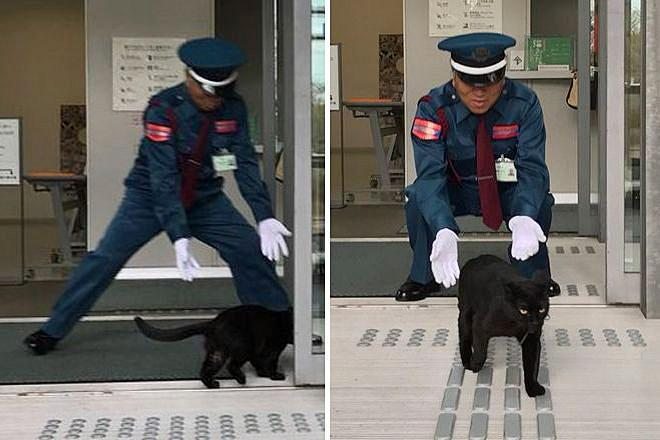

Unveiling the Enigmatic World of Wild Cat Security Guards
Discover the mysterious and fascinating world of wild cat security guards. These incredible feline protectors play a vital role in safeguarding their territory and ensuring the security of their fellow wildlife inhabitants.
The Stealthy Guardians
Wild cat security guards are known for their stealthy movements and sharp instincts. They navigate their surroundings with unparalleled agility, keeping a watchful eye on potential threats and intruders.
While domestic cats may enjoy a life of leisure, their wild counterparts take on the responsibility of maintaining the delicate balance of their ecosystems.
Protecting Their Territory
These enigmatic feline protectors mark and defend their territories, ensuring that only those with the right credentials—scent markings and body language—are allowed access.
The Code of Conduct
- Patrolling the boundaries with precision
- Communicating through secret feline signals
- Collaborating with other wildlife for mutual protection
- Remaining vigilant during the day and night
Join us on this captivating journey as we unveil the hidden world of wild cat security guards and explore the secrets of their intriguing lifestyle.